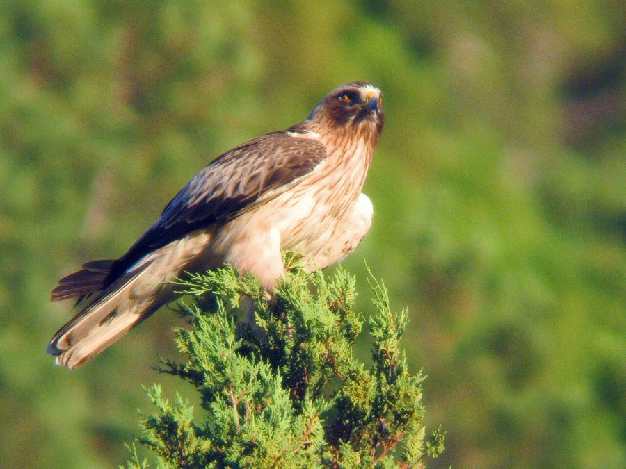

बूटेड ईगलBooted Eagle
Hieraaetus pennatus · Accipitridae · BRD-0208

- Scientific name वैज्ञानिक नाम
- Hieraaetus pennatus (Gmelin, 1788)
- Family कुल
- Accipitridae
- Hindi हिंदी
- बूटेड ईगल
- Local names स्थानीय नाम
- booted eagle, eagle
- Status here यहाँ की स्थिति
- native
- Movement आवागमन
- Winter visitor
- Known from कहाँ दर्ज
- Others have published records from the Basti–Ayodhya districts बस्ती–अयोध्या के ज़िलों से दूसरों के प्रकाशित अभिलेख
- IUCN IUCN
- LC
- Review समीक्षा
- audited and independently read
When to look कब देखें
Winter visitor शीतकालीन प्रवासी. Expected mainly in October, November, December, January, February, March, April, May. मुख्यतः अक्टूबर, नवंबर, दिसंबर, जनवरी, फ़रवरी, मार्च, अप्रैल, मई में अपेक्षित।
Arrives in October–November from breeding grounds in the Palearctic and Central Asia; departs by April–May. Expected in grasslands and cultivated areas across eastern UP. Recorded in Parvati Arga and Bakhira wetland surveys. All migrants and visitors →
Uses and possibilities उपयोग और संभावनाएँ
Drawn from the documented uses in the profile below, where each is labelled traditional, current or a research lead. All uses →
Tell it apart from इनसे अलग पहचानें
बूटेड ईगल / Booted Eagle
Hieraaetus pennatus (Gmelin, 1788) — Accipitridae
बूटेड ईगल — छोटा शिकारी, जो हिमालय और मध्य एशिया से सर्दियों में आता है। इसके पैरों पर सफेद पंख होते हैं जो इसे "पंजे वाला" कहलवाते हैं। पूर्वी उत्तर प्रदेश के मैदानों में अक्टूबर से अप्रैल तक उड़ता दिखता है। यह छोटी चिड़ियों, गिलहरियों और छोटे जानवरों का शिकार करता है।
Quick Identification त्वरित पहचान
| Feature | Description |
|---|---|
| Size | Small eagle; 48–50 cm long |
| Build | Compact, powerful legs and talons |
| Plumage | Brown above; pale or buff underparts |
| Head | Dark; pale cheeks (variable) |
| Distinctive | White or pale patch on upper back |
| Legs | Feathered down to talons ("booted") |
| Flight | Direct, powerful; often low over ground |
| Tail | Relatively short for eagle |
Field tip: A small, stocky eagle of open ground. The dark upperparts contrasting with paler underparts, and the distinctive white or pale rump patch are key. The "booted" feathered legs distinguish it from other small eagles. Often seen hunting over grasslands with direct, purposeful flight.
हिंदी — कैसे पहचानें:
छोटा शिकारी, मजबूत पंजे।
भूरे रंग के ऊपरी पंख।
सफेद रंप पैच।
पैरों पर पंख।
Morphology आकारिकी
Biometrics:
| Measurement | Range |
|---|---|
| Total length | 480–500 mm |
| Wing | 360–380 mm |
| Tail | 200–220 mm |
| Tarsus | 42–50 mm |
| Weight | males 600–800 g; females 900–1100 g |
Size: 48–50 cm long; wingspan 110–130 cm. A small eagle, noticeably smaller than larger raptors.
Plumage: Highly variable. Two main morphs:
- Dark morph: Uniformly dark brown above and below.
- Light morph: Dark brown above; buff or cream underparts; distinctive white or pale rump patch.
Head: Dark cap and nape; variable pale cheeks and throat (light morph).
Legs: Feathered down to the toes ("booted"), characteristic of the species.
Wings: Brown, fairly short for an eagle; powerful flight feathers.
Tail: Relatively short, dark brown with barring.
Sexual dimorphism: Females larger and heavier than males; no clear plumage difference.
Juveniles: Similar to adults but with slightly paler markings.
Vocalisations. Call repertoire:
- Contact call: A weak, high-pitched ki-ki-ki, given in flight.
- Alarm call: Sharp whistles and screams, rarely heard in winter range.
- Song: Elaborate calling on breeding grounds; not typically heard in Asia.
हिंदी: कोमल "की-की-की" आवाज़। तीक्ष्ण चीखें देता है। सर्दियों में कम आवाज़।
Behaviour & Ecology व्यवहार और पारिस्थितिकी
Predator: Booted Eagle hunts small mammals and birds. Primary prey includes:
- Small mammals (ground squirrels, gerbils, voles)
- Small birds (quails, pipits, larks)
- Occasionally small reptiles and insects
- Rarely larger prey
Hunting: Hunts by flying low over grasslands and scanning ground, diving on prey from height. Also perches and watches before attacking.
Social behaviour: Solitary or in pairs. Males and females often hunt separately in winter.
Roosting: Perches in tall trees, rocky outcrops, or on the ground.
Predators: Larger raptors and predation on eggs/chicks by crows and monitor lizards (breeding grounds).
Flight: Direct, powerful flight; hovers occasionally.
हिंदी: अकेले या जोड़ों में शिकार करता है। छोटे जानवर और चिड़ियाँ खाता है। निम्न उड़ान से शिकार को देखता है।
Life Cycle / Phenology जीवन चक्र
| Month | Event |
|---|---|
| January–February | Winter resident; hunting in eastern UP |
| March–April | Spring passage; gradual departure northward |
| May–June | Breeding in Palearctic; absent from eastern UP |
| July–August | Post-breeding dispersal |
| September–October | Autumn passage; increasing in eastern UP |
| November–December | Peak numbers; winter residents settled |
Breeding: Does not breed in eastern UP; breeds in Palearctic (Europe, Russia, Central Asia) from April to August. Nest on cliff or in tall tree. Clutch typically 1–3 eggs.
Moult: Prebasic moult occurs before arrival at wintering grounds (July–September).
Migration: Long-distance migrant; returns to same wintering areas in successive years.
हिंदी: अक्टूबर में आता है, अप्रैल तक रहता है। हिमालय और मध्य एशिया में प्रजनन करता है। सर्दियों में मैदानों में। लंबी दूरी का प्रवासी।
Host Plants or Prey आहार
| Food Type | Examples | Feeding Behaviour |
|---|---|---|
| Small mammals | Ground squirrels, gerbils, voles | Hunted from low flight over grasslands |
| Small birds | Larks, pipits, quails, sparrows | Caught in flight or from ground |
| Reptiles | Lizards | Occasionally taken |
| Insects | Large insects | Minor component |
हिंदी: छोटे जानवर और चिड़ियाँ शिकार करता है। कम उड़ान से शिकार खोजता है। दिन का शिकारी।
Predators / Natural Enemies शत्रु
- Avian predators: (rare in region), Peregrine Falcon
- Mammalian predators: Not typically; young vulnerable to foxes (breeding grounds)
- Nest predators: Crows, monitor lizards (breeding grounds)
हिंदी: बड़े शिकारी इसका शिकार कर सकते हैं। अंडों को कौवे खतरे में डालते हैं।
Agricultural / Human Relevance कृषि प्रासंगिकता
Protected species: The Booted Eagle is protected under the Wildlife (Protection) Act 1972. Hunting is prohibited in India.
Pest control: Feeds on ground squirrels and other rodents that damage crops, providing a beneficial ecosystem service.
Habitat indicator: Presence indicates healthy grassland ecosystems with abundant small mammal populations.
Field indicator: Seen soaring or hunting over open plains indicates relatively intact grassland habitat.
Conservation status: Populations are stable across its range. Not threatened in Asia.
Cultural relevance: Known to local birdwatchers and raptor enthusiasts as a winter visitor.
हिंदी: यह विधि अधिनियम 1972 के तहत संरक्षित है। इसका शिकार करना कानूनी रूप से निषिद्ध है।
Expected Locally स्थानीय रूप से अपेक्षित
Not a field record. Written from published accounts for eastern Uttar Pradesh. No confirmed local sighting yet — if you have seen it, that is what the atlas needs.
अभी तक स्थानीय पुष्टि नहीं। यह विवरण प्रकाशित स्रोतों से है, किसी अवलोकन से नहीं।
Winter range: Expected in eastern UP from October to May in open grasslands and cultivated plains. GBIF holds published records from the wider Awadh–Purvanchal plain. Most commonly seen hunting over the open plains of the Ghaghra and Rapti systems.
Habitat preference: Open grasslands with short vegetation; cultivated plains with scattered trees for perching; wetland edges and margins.
Peak season: November–March, when winter visitor numbers are highest.
Detection: Look for solitary birds flying low over grasslands, quartering the ground systematically. Early morning is often best.
What a first record would be: A dated photograph or detailed observation of the bird hunting or perched in eastern UP submitted through the About page, with location and date.
हिंदी: मैदानों और खुली जमीन पर सर्दियों में अपेक्षित। पार्वती अर्गा और बखीरा में देखी गई है। घाघरा के पास आम। अक्टूबर से अप्रैल तक रहती है।
Distribution वितरण
Global range: Breeds across much of the Palearctic from Spain to Japan; winters across Africa, Asia, and Mediterranean regions. Highly migratory.
In India: Winter visitor across northern and central India; rare in southern peninsular regions.
In Uttar Pradesh: Winter visitor throughout the state, particularly in open plains; more common in eastern districts.
In Basti district / eastern UP: Expected as a winter visitor in open grasslands and cultivated areas; regular presence documented in survey records.
Research Questions शोध प्रश्न
- What is the detailed wintering distribution and habitat use of Booted Eagle in eastern UP?
- How do population numbers vary seasonally and annually?
- What is the diet composition during the winter season in relation to prey availability?
- पूरे सर्दियों के दौरान इसकी शिकार की सफलता दर क्या है?
- How does grassland management (grazing intensity, burning, cultivation) affect prey availability and eagle presence? (A child can observe hunting eagles and estimate success rates.)
- क्या यह प्रजाति आवास के नुकसान के कारण भारत में कम हो रही है?
Similar Species मिलती-जुलती प्रजातियाँ
| Species | Key Difference | Hindi | Field Rule | |
|---|---|---|---|---|
| Golden eagle (Aquila chrysaetos) | Much larger; heavier build; no white rump patch | सुनहरा बाज | Golden is twice the size, heavier, darker. Booted is small and compact. | |
| [[common_kestrel\ | Common Kestrel]] (Falco tinnunculus) | Smaller falcon; different shape; hovers | मेहँदी बाज | Kestrel is much smaller and lighter; different hunting style. |
Field rule: The Booted Eagle is a small, compact eagle with feathered legs (distinctive "boots"), pale rump patch, and direct flight over grasslands. If the bird is much larger or lacks the distinctive field marks, it is likely a different raptor.
Taxonomy & Classification वर्गीकरण
Original description. The species was described by Gmelin in 1788. The type locality is the Palearctic region.
Subspecies. Two subspecies recognized: H. p. pennatus (Europe and western Asia, occurs in India) and H. p. orientalis (eastern Asia).
Family and order placement. Order Accipitriformes; family Accipitridae (eagles, hawks, kites). The genus Hieraaetus contains small to medium-sized eagles.
Phylogenetic notes. Closely related to other Hieraaetus species; part of a clade of small, agile eagles.
IUCN status rationale. Assessed as Least Concern (LC) globally. Populations are stable and widespread. The species is adaptable to various open habitats. In India, it is protected under the Wildlife Protection Act 1972.
हिंदी: विश्वभर में फैली प्रजाति। सर्दियों में भारत में आती है। कानून से पूरी तरह सुरक्षित है।
Photo Gallery फोटो गैलरी
No photos yet — add field photos to media/species/booted_eagle/ and run node scripts/sync_photos.js.
Wanted photos:
- Adult in flight, showing rump patch
- Perched on tree or ground
- Hunting over grassland
- Close-up showing feathered legs ("boots")
- With prey
References संदर्भ
- Gmelin, J. F. (1788). Systema Naturae (13th edn). Vol. 1. Pp. 248–249.
- Ali, S. & Ripley, S. D. (1970). Handbook of the Birds of India and Pakistan. Vol. 1 (Divers to Hawks). Oxford University Press, Delhi. Pp. 259–261.
- Cramp, S. & Simmons, K. E. L. (1980). Handbook of the Birds of Europe, the Middle East and North Africa: The Birds of the Western Palearctic. Vol. 2 (Hawks to Bustards). Oxford University Press. Pp. 273–283.
- Rasmussen, P. C. & Anderton, J. C. (2005). Birds of South Asia: The Ripley Guide. Smithsonian Institution, Washington, D.C. Pp. 126–127.
- GBIF Occurrence Data — Hieraaetus pennatus, India.
- IUCN Red List (2024). Hieraaetus pennatus — BirdLife International assessment. IUCN, Cambridge. Status: Least Concern.
Source file: species/fauna/birds/booted_eagle.md